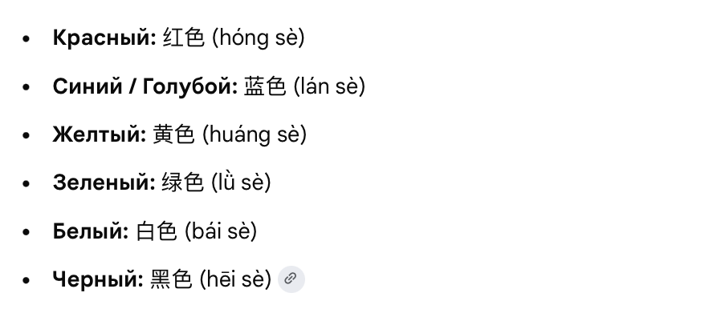

материалы к занятиям
Презентации и тест на определение уровня
Если файл не открывается — выключите VPN. Материалы хранятся на Яндекс Диске, а Яндекс часто не пускает подключения через VPN.
содержание раздела
- 01 «В мир китайского языка» — вводная презентацияПрезентация к первому занятию: зачем учить китайский и что даёт язык. открыть скачать
- 02 Диагностический тест уровня китайского языкаУзнавание иероглифов, их значения, чтение коротких предложений и текста, устный ответ. открыть скачать
- 03 «Почему китайцы не любят число 4 и обожают 8?» — презентацияСимволика чисел в китайской культуре: 4, 8, 6 и 520 — как звучание меняет смысл. открыть скачать
- 04 «国庆节» — День образования КНРИстория праздника, флаг, герб и гимн с разбором текста, торжества и «золотая неделя». открыть скачать
цвета (颜色)
